É a designação morfológica para projeção cônica, acentuadamente hiperceratótica, similar ao corno de um animal, que pode se associar tanto a lesões benignas quanto a malignas. As lesões malignas na base do corno geralmente são os carcinomas de células escamosas. É válido ressaltar que, ao contrário dos chifres de animais que geralmente contêm um molde ósseo, os cornos cutâneos consistem apenas em queratinócitos proliferativos cornificados sem um componente ósseo. Um corno cutâneo é mais um sinal do que um diagnóstico específico.
Etiologia A causa mais comum de corno cutâneo benigno é a queratose seborreica ou liquenoide. Outras causas benignas incluem infecções como papilomavírus humano, Molluscipoxvirus (molusco contagioso), rinosporidiose, irritação crônica, hemangioma, sarcoidose, xantogranuloma juvenil, nevo epidérmico, pilomatricoma, angioqueratoma, triquilemoma e adenoma sebáceo.
As queratoses actínicas são a causa primária pré-maligna mais comum de corno cutâneo, enquanto o carcinoma espinocelular (CEC) é a causa maligna mais comum. Causas pré-malignas e malignas adicionais incluem ceratose por arsênico, ceratose pseudoepiteliomatosa, balanite micácea, doença de Bowen, carcinoma verrucoso, epitelioma basocelular, sarcoma de Kaposi e ceratoacantoma. Além disso, chifres cutâneos foram descritos em casos envolvendo malignidades concomitantes distantes, como carcinoma de células renais.
Embora a patogênese exata do corno cutâneo seja desconhecida, supõe-se que o envelhecimento celular, o fotodano e a subsequente disfunção epitelial contribuam para sua manifestação. Isso é corroborado pelos achados de exposição solar e idade avançada sendo as comorbidades mais comuns em pacientes com cornos cutâneos.
Epidemiologia
São lesões raras, com predominância nas pessoas de pele mais clara. Nos homens, a taxa de malignidades na base da lesão é maior quando comparada as mulheres. Alguns estudos também mostraram que lesões pré-malignas são ligeiramente mais comuns em homens. O pico de incidência ocorre entre 60-70anos. As lesões com malignidade na base ocorrem mais frequentemente em pacientes acima de 70 anos. Vale salientar que o carcinoma de células escamosas cutâneo é a segunda forma mais comum de câncer de pele humana, com pelo menos 200.000 a 400.000 novos casos de CEC esperados a cada ano nos EUA.
Fisiopatologia
A hiperceratose que resulta na formação do corno cutâneo desenvolve-se sobre a superfície de uma lesão hiperproliferativa. Enquanto a queratina protuberante e compacta pode ser a característica clínica mais proeminente, é o processo na base da lesão que tem maior importância, já que podem apresentar condições subjacentes benignas, pré-malignas ou francamente malignas.
Manifestações clínicas
Essas lesões são frequentemente encontradas na pele exposta ao sol, particularmente rosto, orelha, nariz, antebraços e dorso das mãos, mas também podem ocorrer no pênis, pescoço, ombro e pálpebra. Elas crescem lentamente ao longo de anos a décadas e podem ser únicas ou múltiplas, de coloração branca ou amarela, com formas retilíneas ou curvilíneas. As lesões malignas apresentam, em geral, consistência mais endurecida na sua base, devido ao processo inflamatório. Sangramento na base da lesão, assim como tamanho maior, tem sido sugerido como uma indicação de malignidade. As lesões com base pré-maligna ou potencial maligno incluem: CEC, adenoacantoma, ceratose actínica, doença de Bowen, sarcoma de Kaposi, melanoma maligno, doença de Paget. As lesões benignas associadas a cornos cutâneos incluem angioqueratoma, angioma, ceratose benigna liquenoide, leishmaniose cutânea, lúpus discoide, nevo epidérmico, prurigo nodular.
Diagnõstico. O diagnóstico primário, na maioria dos casos, é sugerido pelo aspecto e pelo curso clínico das lesões. O diagnóstico é confirmado através de biópsia de pele.
Diagnóstico diferencial
Considerar no diagnóstico diferencial pilomatricoma e verrugas não genitais. Unha ectópica, ceratose seborreica, queratose actínica, Doença de Bowen e melanoma também devem ser considerados.
Tratamento
A conduta utilizada para o tratamento do corno cutâneo é a exérese cirúrgica seguida de avaliação histopatológica para confirmação do diagnóstico específico de sua base. No caso de lesões benignas na base do corno, a biópsia é tanto diagnóstica quanto terapêutica. Pacientes com corno cutâneo apresentando carcinoma de células escamosas na base também devem ser avaliados para metástase. A destruição local com criocirurgia é o tratamento de primeira linha para a verruga vulgar, ceratose actínica e molusco contagioso. Lesões benignas não precisam de outra terapia, além da biópsia diagnóstica. O prognóstico depende da classificação da lesão proliferativa subjacente na base do corno. Terapias não cirúrgicas (radioterapia, criocirurgia) podem ser selecionadas para tumores de baixo risco ou se a cirurgia for contraindicada, com o entendimento de que a taxa de cura pode ser menor.
REFERÊNCIAS BIBLIOGRÁFICAS
1. Cutaneous horn due to cutaneous squamous cell carcinoma. Zhang LW, Chen T.. Med J Aust. 2022 Dec 12;217(11):586.
2. Giant Cutaneous Horn Arising in an Epidermal Nevus. Cardis MA, Kirkorian AY. Pediatr Dermatol. 2017 Sep;34(5):e290-e291.
3. Cutaneous horn on the arm of an adolescent male. Martínez-Gayosso A, Dávalos-Tanaka M, González-González M, Sáez-de-Ocariz M, Orozco-Covarrubias L. Pediatr Dermatol. 2022 Nov;39(6):982-984.
4. Penile cutaneous horn. Pal D, Pal DK. Urol Ann. 2020 Jan-Mar;12(1):80-82.
5. Cutaneous Horn of the Glans. Ribeiro CS, Azulay DR, Quintella DC, Cuzzi T, Ramos-E-Silva M. Case Rep Dermatol. 2021 Jun 17;13(2):304-309.
Atlas de imagens 18

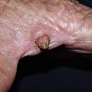

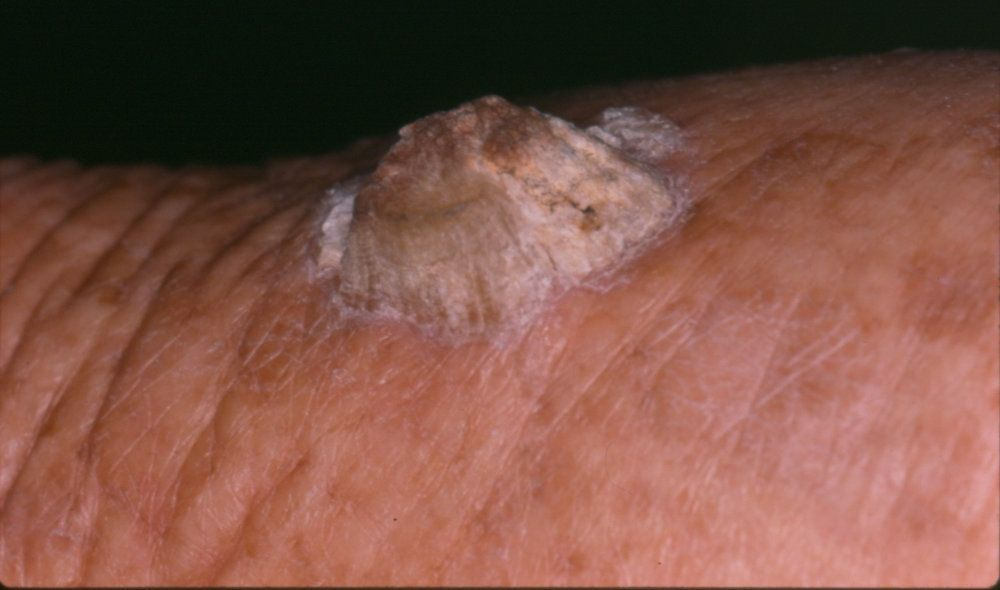

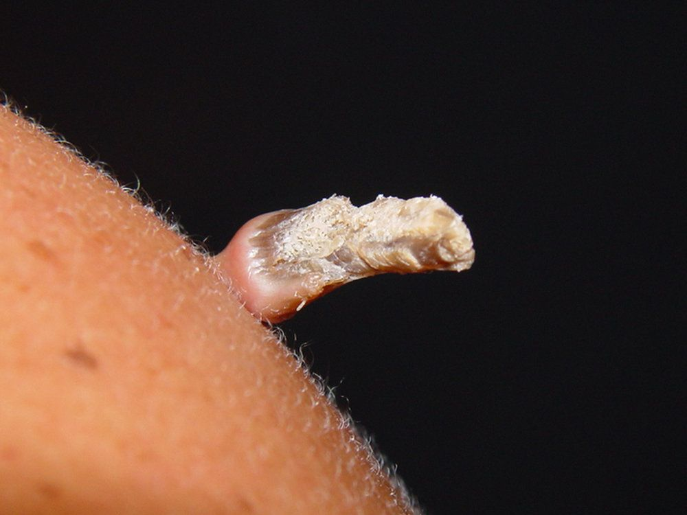

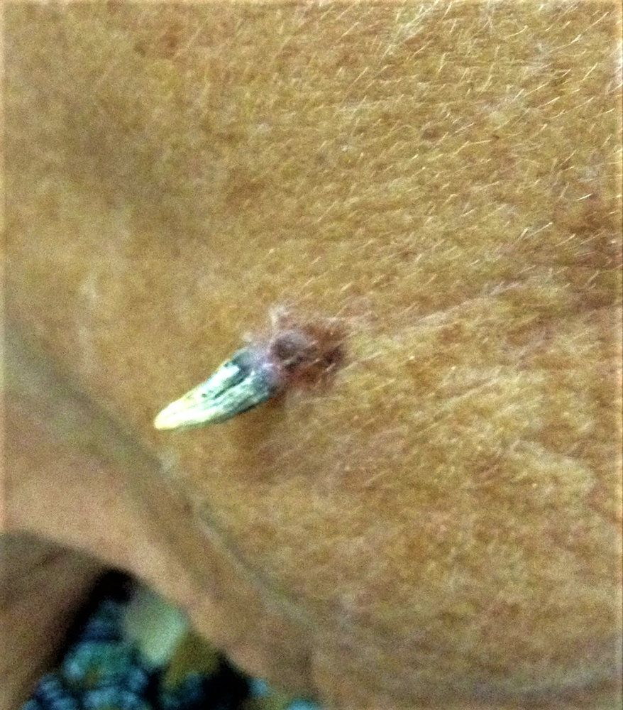

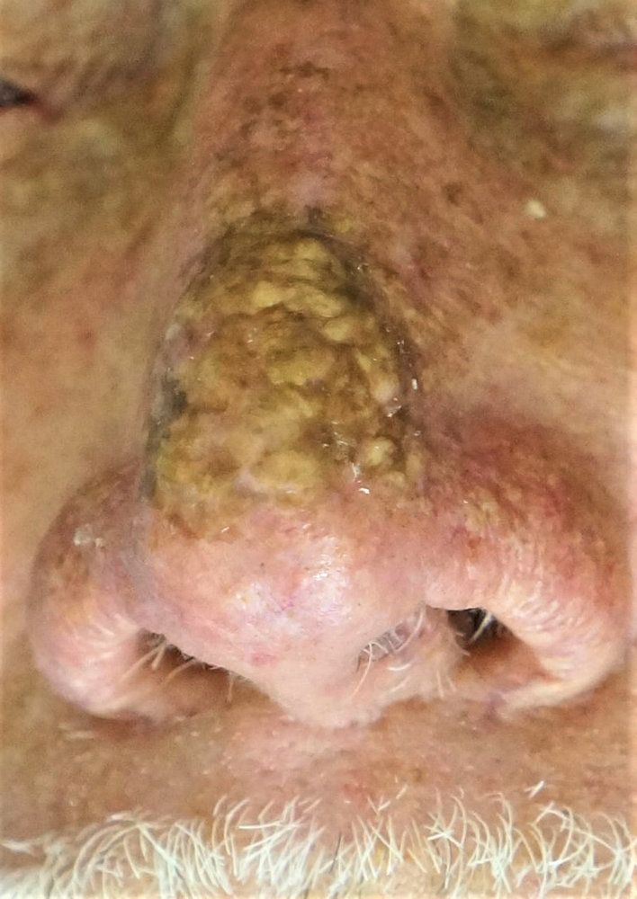

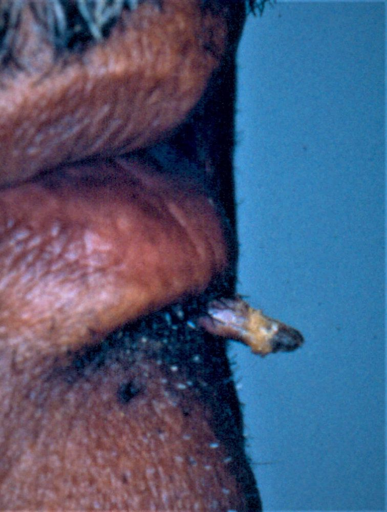

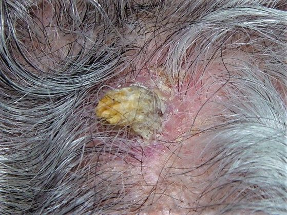

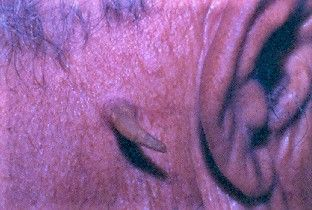

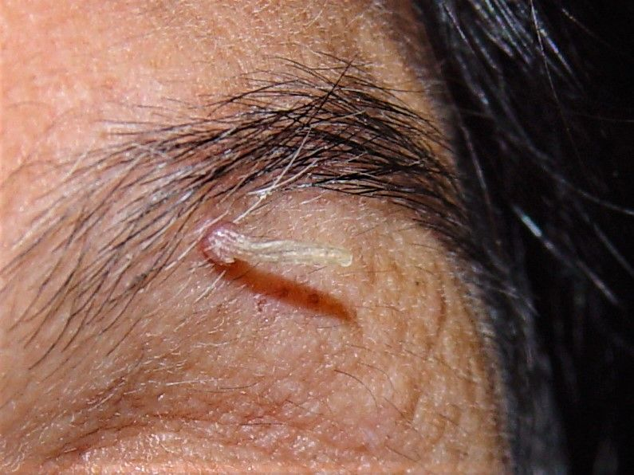

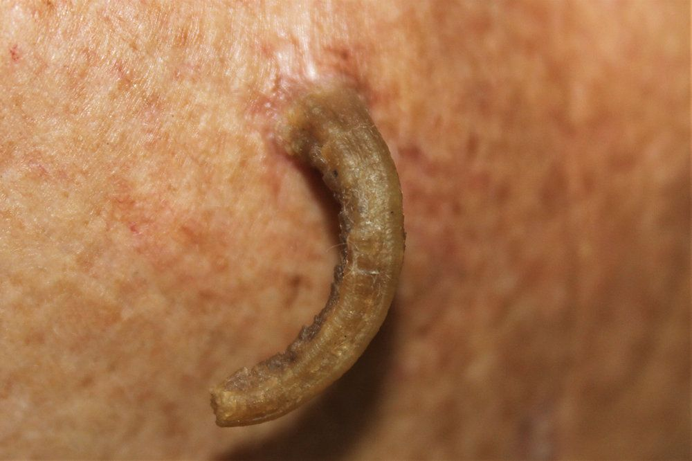

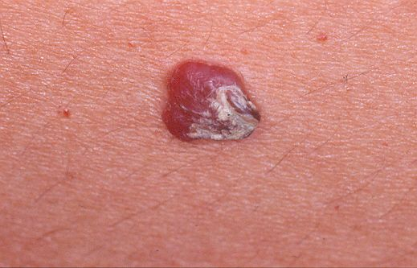

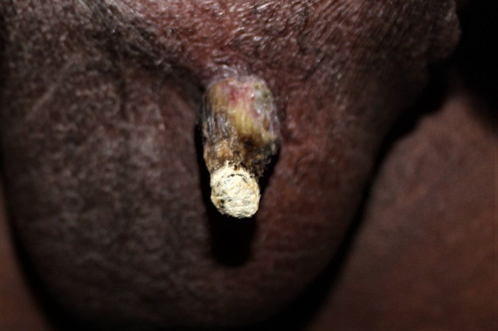

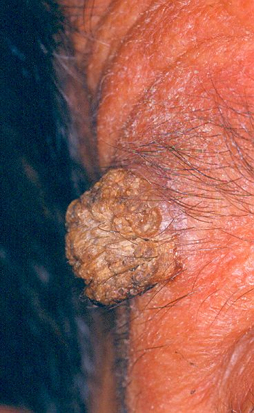

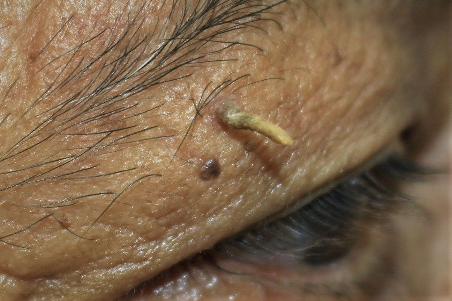

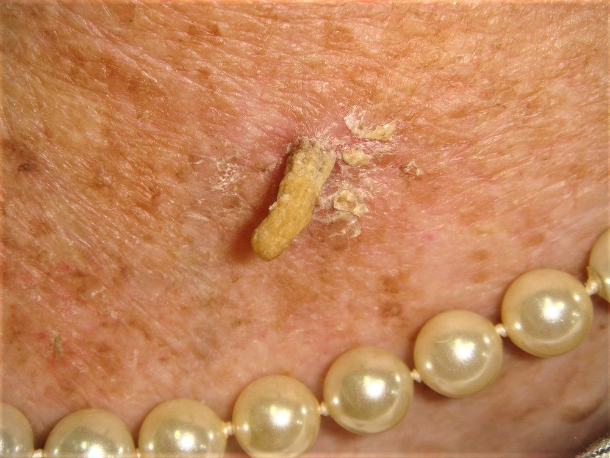

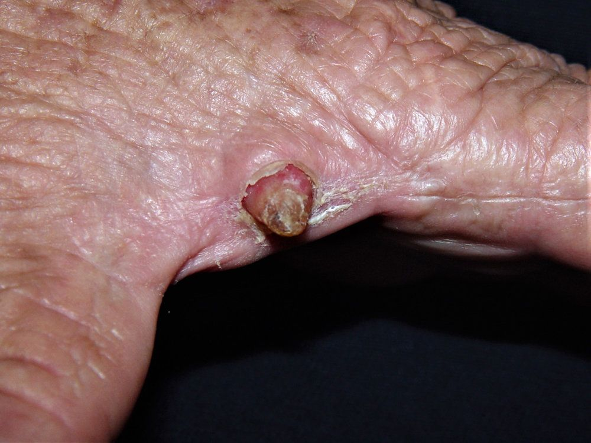

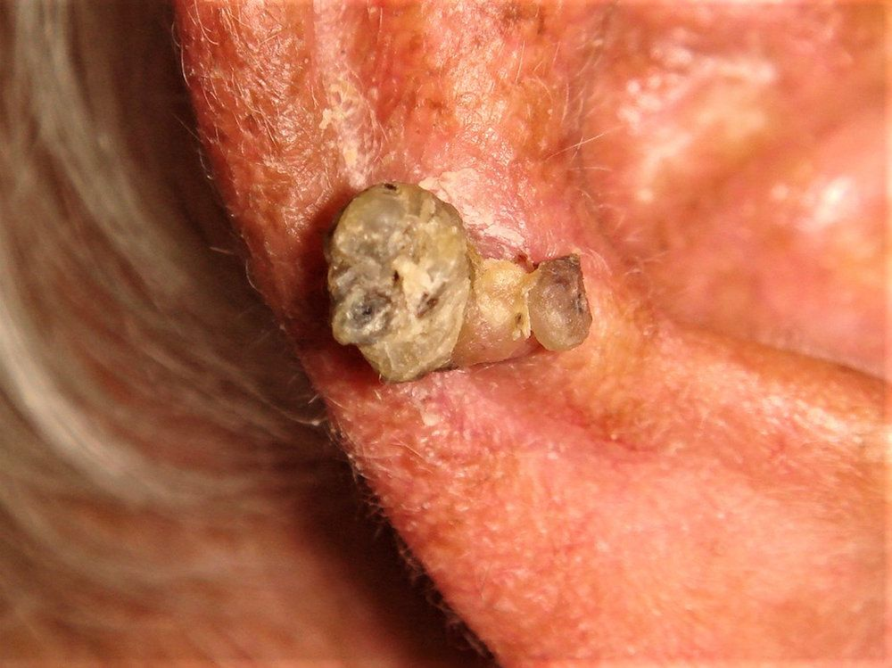

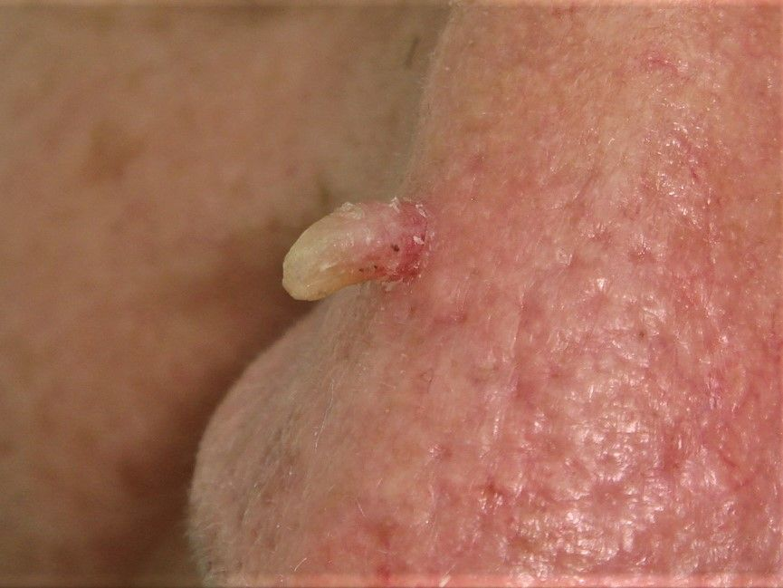
Na Skin Prime
Como podemos ajudar
Entre os recursos citados para Corno Cutâneo, estes estão disponíveis na clínica:
Tratamentos
Diagnóstico